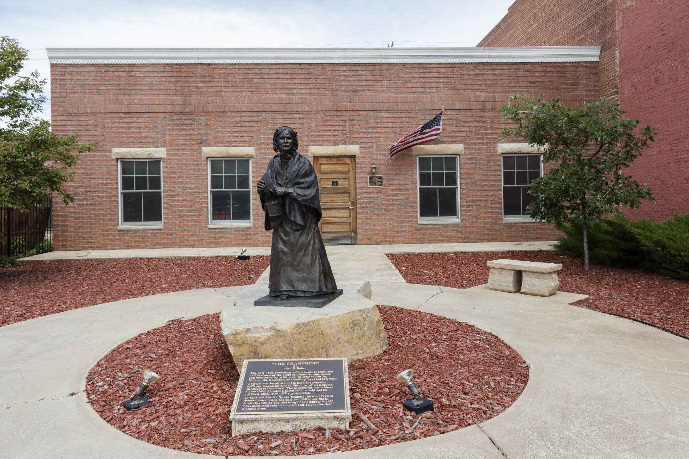

Nov 11, 2026
Wyoming women won the right to vote in 1869, when this land was still a territory. The name Equality State comes from that law, and from the right later written into the state constitution.
Research report (PDF) · Word copy (.docx)

CHEYENNE — Wyoming is called the Equality State for a reason that still sits in the law.1 This is not a name cooked up for a souvenir spoon. In 1869, this land was still a territory, and women here won the right to vote and to hold office.
That was about 50 years before the 19th Amendment did the same for the whole country.2 The rest of the nation took its time.
The high plains were a new territory then, and not much was settled except the weather, which has never been shy about making itself known. The map had a new name on it, and a great deal of open ground under that name, waiting to be crossed. Wyoming Territory was created on July 25, 1868.3 John Campbell became the first territorial governor the next year, with a desk full of first decisions and no long stack of custom to lean on.
A territory that young had a short list of official habits, and a long list of arguments still to come.
On Dec. 10, 1869, Governor Campbell signed a short bill. William Bright had introduced it in the territorial council. The law said that every woman, age 21 or older, who lived in the territory could vote.2 She could also hold office, the same as other voters.
A short length of rope can still hold a gate, and this one did.
The change showed up in a hurry. On Feb. 17, 1870, Esther Hobart Morris of South Pass City became a justice of the peace. Official state records call her the first woman ever appointed to that office.3 A gavel is a small tool, but it still has weight.
In March 1870, women in Laramie were named to a jury. Official records say that was a first for Wyoming.3 They were called to sit in judgment, which is no small chore.
On September 6, 1870, Louisa Swain of Laramie voted. Official state records call her vote the first equal suffrage vote in the territory.3
Some laws, once they get into the book, still have to survive the next session, when a later crop of lawmakers may want a different ending.
In 1871, the territorial legislature tried to repeal the law. Governor Campbell vetoed that bill.2 The lawmakers had a second thought. The governor did not.
When Wyoming asked to become a state, that right was written into the state constitution. Article 6, Section 1 protects the right to vote and hold office. It says that right shall not be denied "on account of sex."4
It also says male and female citizens "shall equally enjoy all civil, political and religious rights and privileges."4 That is a fence built to last.
Wyoming entered the Union on July 10, 1890. It was the 44th state.3 It was the first state to come in with that guarantee already in its constitution.2
The official state motto is "Equal Rights."1 The Great Seal shows a woman holding a banner with those same words, held up where anyone can read them. The seal also shows the years 1869 and 1890, which mark the territory and statehood. The number 44 on the seal is Wyoming's place in the Union.
The state stamped those marks on the official hardware, like dates burned into a beam.
The story did not stop at statehood. In 1925, Nellie Tayloe Ross became governor of Wyoming. Official state records call her the first woman governor in the United States.3 The state, it turned out, was still willing to hand a woman the reins.
A statue of Swain stands in a plaza in Laramie today, out in the open air, where the light and the dust can reach it in any season. A person can walk around it the way a person walks around a hitching rail in a yard. Families can walk right up to it, if a person is willing to step out of the wind and look.
Credits
- Wyoming Secretary of State — Student's Corner, State Symbols (nicknames, motto, and Equality State explanation). https://sos.wyo.gov/Services/StateInfo_Symbols.aspx
- Wyoming State Library — Women's Suffrage in Wyoming: Legislation (1869 Council Bill 70, introduced by William H. Bright; Dec. 10, 1869 approval by Gov. John A. Campbell; 1871 repeal attempt and Campbell veto; first state to guarantee the right in its constitution). https://gowyld.libguides.com/wyomingwomenssuffrage/legislation
- State of Wyoming — Chronology (territory created July 25, 1868; suffrage bill signed Dec. 10, 1869; Esther Hobart Morris appointed justice of the peace Feb. 17, 1870; women first empaneled for jury service in Laramie, March 1870; Louisa Swain vote Sept. 6, 1870; statehood July 10, 1890, as the 44th state; Nellie Tayloe Ross, first woman governor in the U.S., 1925). https://www.wyo.gov/about-wyoming/wyoming-history/chronology
- Wyoming Legislature — Wyoming Constitution (Title 97), Article 6, Section 1 ("Male and female citizens to enjoy equal rights"). Official compilation accessed Nov. 11, 2026. https://www.wyoleg.gov/statutes/compress/title97.pdf
- Wyoming Secretary of State — Great Seal (adopted 1893, revised 1921; "Equal Rights" banner; dates 1869 and 1890; number 44). https://sos.wyo.gov/Services/GreatSeal.aspx